Digital Painting
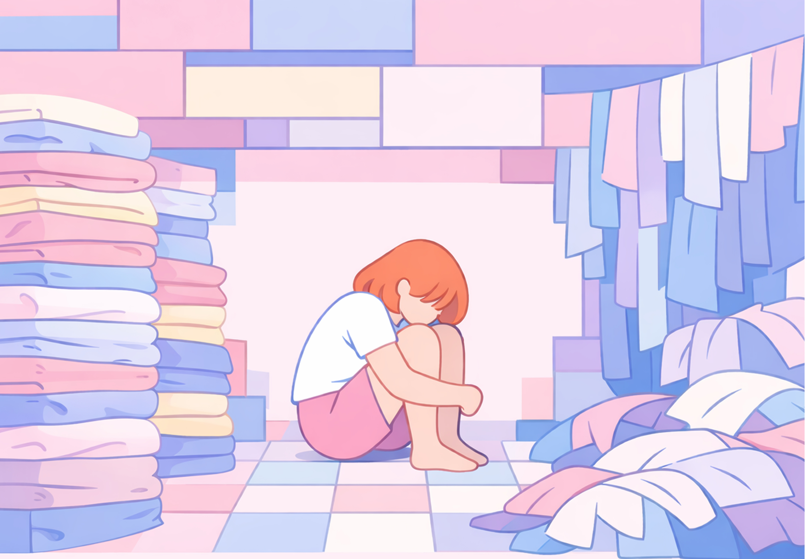
2026200 cm x 140 cm" data-desc="A woman sits compressed within a narrow space, surrounded by piles of folded and unfolded clothing. These garments do not represent individual tasks, but the endless repetition of domestic labor itself—work that accumulates, occupies space, and yet is never truly completed. Within what is framed as everyday normality, women’s time and bodies are continuously consumed.The figure becomes enclosed by an invisible system of expectation, where care and responsibility are assumed, and personal presence gradually disappears. 一位女性蜷缩在狭小空间里，四周堆叠着已叠与未叠的衣物。 这些衣服并非具体的物件，而是不断重复的家务劳动本身——它们占据空间、制造压力，却从未真正消失。 在被视为“理所当然”的日常中，女性的时间与身体被持续消耗， 个体逐渐被家务的秩序与责任所包围、挤压，成为一项永远无法完成的任务的一部分。 ">
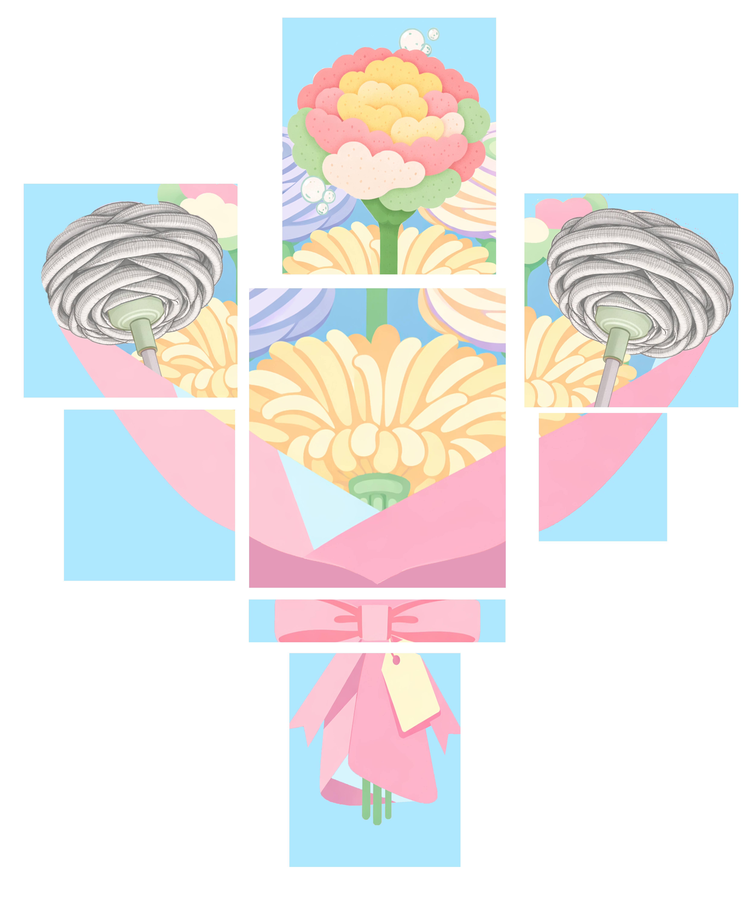
2026166 cm x 200 cm" data-desc="At first glance, the image resembles a romantic bouquet offered as a gesture of affection.Upon closer inspection, the flowers are constructed from cleaning tools, carefully wrapped and arranged as a gift. The work reveals how women’s labor is often disguised beneath care and romance.Even within tenderness, domestic work remains expected, normalized, and quietly embedded in beauty. 乍看之下，这是一束象征爱意与关怀的花束； 但细看会发现，花朵实际上由清洁工具组成，被精心包裹成礼物的形态。 作品揭示了女性劳动如何被浪漫与关怀所掩盖—— 即使在温柔的外表之下，家务劳动依然被默认为理所当然，并被悄然美化。"> 2026
200 cm x 140 cm" data-desc="The image presents an upright bowl with visible stains, accompanied only by rubber gloves and a sponge. The person is absent, yet the trace of labor remains. These objects suggest an assumed role — as if someone will inevitably clean it, and that “someone” is often socially understood to be a woman. While stains can be removed, the expectation itself quietly persists in everyday life. 画面中只有一个立起的碗、未清理的污渍，以及洗碗手套和海绵。人物缺席，但劳动的痕迹仍然存在。 这些工具暗示一种被默认的角色——仿佛总有人会去清理，而这个“人”往往被社会自然地指向女性。 污渍可以被洗去，但这种期待却长期存在，在日常生活中反复发生。 ">
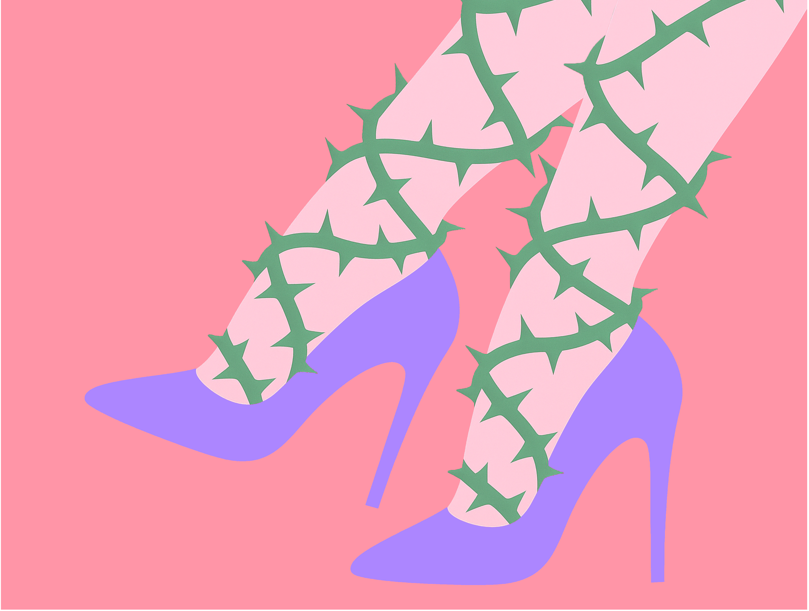
2026125 cm x 95 cm" data-desc="High heels intertwine with thorns around the legs. Elegance and pain coexist within the same structure. Standards of appearance are enforced through the body, where beauty is maintained at a physical cost. 高跟鞋与荆棘缠绕在同一条腿上， 优雅与疼痛在同一结构中并存。 外表的规范以身体为代价， 美被建构为一种必须承受的过程。">
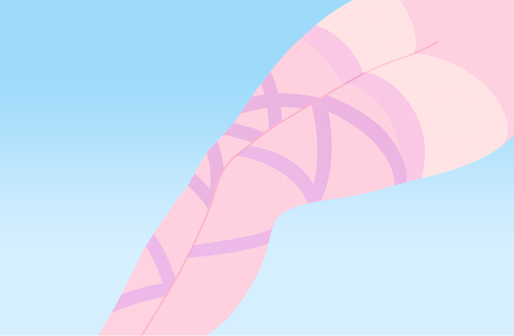
2026200 cm x 130 cm" data-desc="Pantyhose function as a visible layer of control imposed on the female body. What appears smooth and neutral conceals restriction, discomfort, and risk. The work addresses how standards of appearance discipline women’s bodies, transforming visual order into physical constraint. 丝袜在作品中成为施加于女性身体表层的控制结构。 看似平滑、中性的外观之下，隐藏着束缚、不适与风险。 作品指向外表规范如何规训女性身体， 将视觉秩序转化为真实而持续的身体限制。">
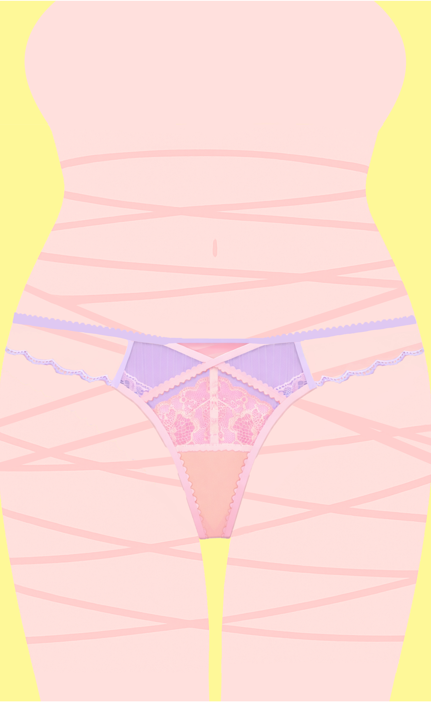
2026100 cm x 160 cm" data-desc="This garment is shaped by expectations external to the body that wears it.Its form prioritizes how it is seen rather than how it is felt. The work reflects how intimacy can be designed to satisfy a gaze,while discomfort and restriction are absorbed by the body itself.What appears delicate and minimal becomes a quiet compromise of physical ease. 这件衣物的形态源自身体之外的期待， 设计更关注被观看的方式，而非穿着者的感受。 作品指向一种被设计的亲密关系—— 视觉的满足被置于首位，而不适与束缚则被悄然转移到身体之上。 看似轻盈与精致，实则是一种对舒适的让渡。">
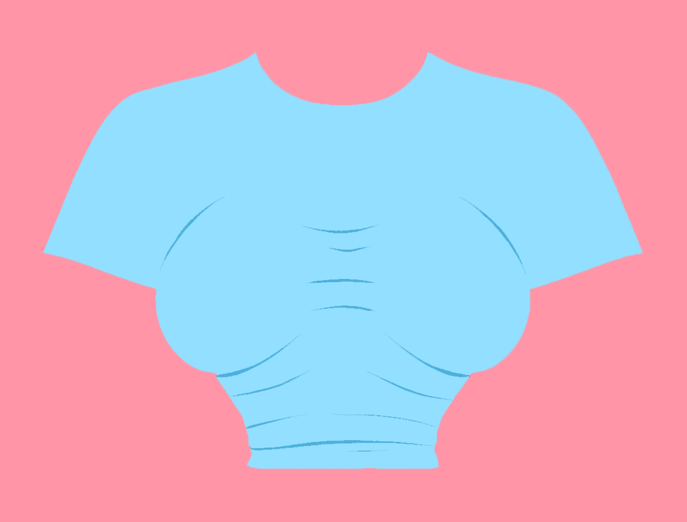
2026125 cm x 95 cm" data-desc="The garment appears reduced in size, shaped tightly around the body.Its proportions suggest an ideal that assumes less space, less volume, less presence. The work reflects how contemporary standards of beauty promote thinness as virtue, using clothing design to discipline bodies into a narrower definition of femininity. 衣物在画面中呈现出被不断缩小的状态，紧密贴合身体轮廓。 这种比例暗示了一种默认的理想——更少的体积、更小的占位、更被压缩的存在。 作品指向当代审美如何将“瘦”塑造成美德，并通过服装设计规训女性身体，使其被限制在愈发狭窄的女性范式之中。 "> 2026
200 cm x 120 cm" data-desc="The image isolates lipstick and a smiling mouth as symbolic forms. It reflects a widely normalized expectation that women should appear fully made-up and maintain a pleasant smile in order to be considered proper or presentable. Within this framework, makeup shifts from personal choice to subtle obligation, while the smile becomes less an expression of emotion and more a performance of social acceptability. 画面中只有口红与微笑的嘴唇，被简化为象征性的符号。作品指向一种被普遍默认的社会期待——女性往往需要保持完整妆容与温和笑容，才被视为得体与体面。在这样的规范中，化妆逐渐从个人选择转化为无形要求，而微笑也从情绪表达转变为维持形象的社会表演。 ">
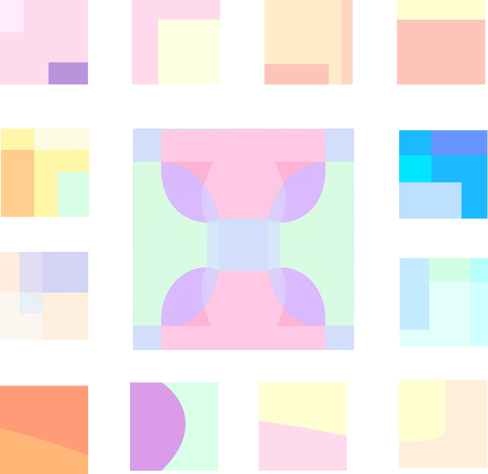
2026110 cm x 110 cm x 1 pcs
20 cm x 20 cm x 12 pcs" data-desc="Underwear is worn to prevent exposure, yet it is deemed insufficient on its own. Additional layers are required to guard against what is already concealed. The work points to a system where responsibility is repeatedly shifted onto women’s bodies. Protection becomes an endless layering of precautions,revealing how anxiety about visibility is managed through restriction rather than trust. 内裤被穿戴是为了防止走光， 但这一层防护却被视为不够安全。 作品指出，一种不断将责任转移至女性身体的机制—— 为了避免被看见，女性被要求层层加码防范。 所谓的保护，最终演变为无止境的限制。">
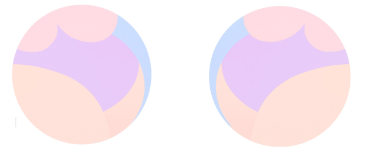
2026Diameter 120 cm" data-desc="The forms expand freely within a circular space, occupying volume without apology.Softness and fullness are presented not as excess, but as balance and presence. The work challenges the assumption that thinness defines beauty. It affirms that bodies do not need to shrink to be pleasing— weight, volume, and softness can exist as their own aesthetic value. 形态在圆形空间中自由展开，占据应有的体积与位置。 柔软与丰盈不再被视为多余，而是一种平衡与存在感。 作品质疑“以瘦为美”的单一审美标准， 强调身体不必缩小才能好看—— 重量、体积与柔软本身，即是一种美。">
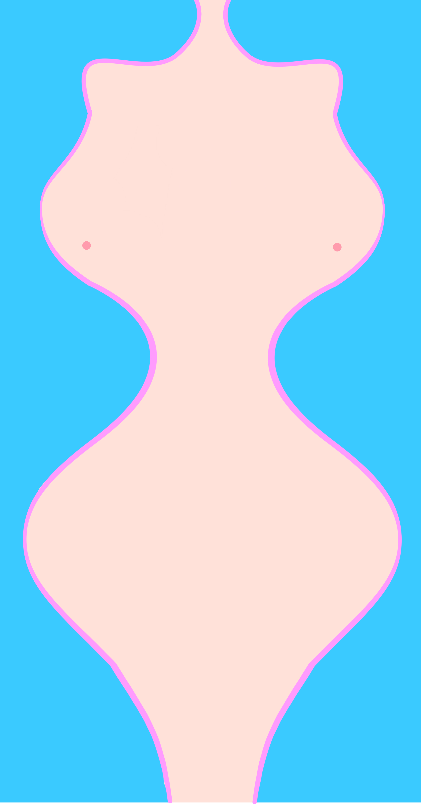
2026150 cm x 80 cm" data-desc="The body is shaped according to a precise visual balance—full where it is expected to be full, narrow where it is required to be slim. The work addresses how ideals of femininity demand simultaneous expansion and reduction, constructing a body that must constantly adjust to contradictory standards of perfection. 身体被塑造成一种精确的视觉平衡——该丰满的部位必须饱满，该纤细的地方则被要求收紧。 作品指向女性身材如何被置于相互矛盾的审美要求之中，在扩张与压缩之间不断调整，以符合被设定的“完美”标准。 ">
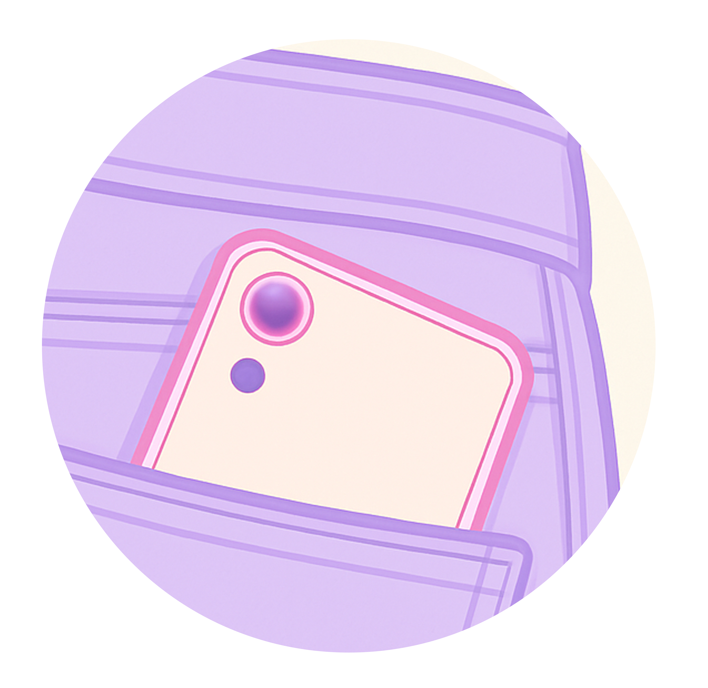
2026Diameter 120 cm" data-desc="The pocket appears present, yet it fails to hold what is needed. Designed as a visual detail rather than a usable space, it excludes everyday objects such as a phone. The work reveals how women’s clothing prioritizes appearance over function, redirecting practical needs into additional consumption. What seems like a minor design choice becomes a system that limits autonomy and generates dependency. 口袋看似存在，却无法真正容纳日常所需。 它被设计为视觉上的装饰，而非可使用的空间，连手机这样的基本物品也无法完全放入。 作品揭示女性服装如何以外观优先于功能，将实际需求转移为额外的消费行为。 看似微小的设计选择，实则构成了一套限制行动、制造依赖的系统。">
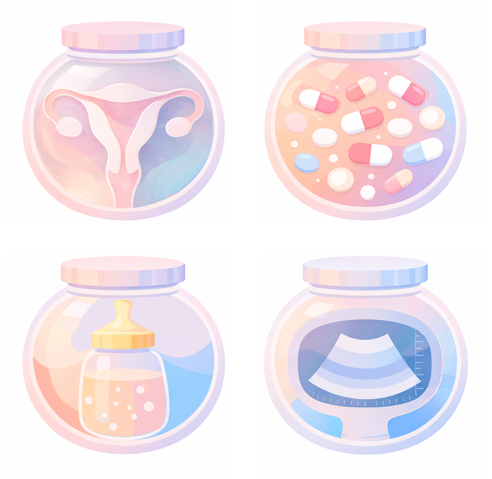
202680 cm x 80 cm x 4 pcs" data-desc="The female body is reduced to a sequence of reproductive functions. From the uterus, to supplements, to ultrasound imaging and feeding bottles, each element exists in service of a future child rather than the individual herself. The work addresses how womanhood is repeatedly defined through reproductive capacity, where the body is treated as a tool for production, and the person behind it gradually disappears. 女性的身体在此被拆解为一连串与生育相关的功能。 从子宫、营养补充、B 超影像，到奶瓶， 所有元素皆围绕“孩子”而存在，而非女性本身。 作品揭示女性如何被反复定义为生育的工具， 身体被视为生产的装置，而作为完整个体的存在感却逐渐被抹去。">
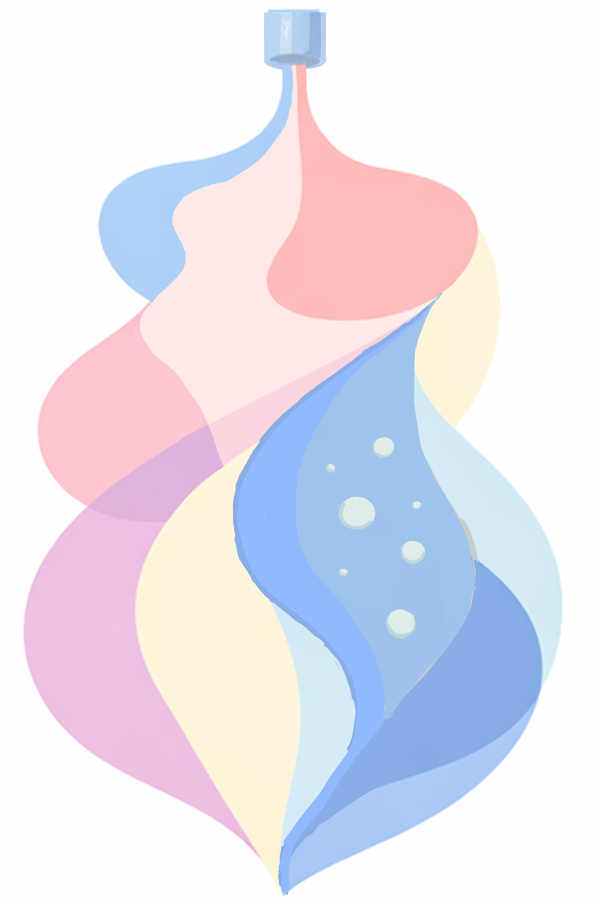
2026120 cm x 180 cm" data-desc="The form remains smooth and continuous, even as it transforms. Change is permitted only if it preserves visual appeal. The work reflects how pregnancy does not exempt women from expectations of desirability.The body is required to adapt without disrupting attraction, as responsibility for relational stability is quietly placed on appearance rather than circumstance. 形态在变化中依然被要求保持流畅与完整， 转变被允许，但前提是不能破坏“好看”的曲线。 作品指向女性在怀孕这一阶段仍需维持吸引力的隐性期待—— 身体必须改变，却不能失序，关系的稳定被悄然转嫁为对外表的持续要求，而非对处境的理解。">
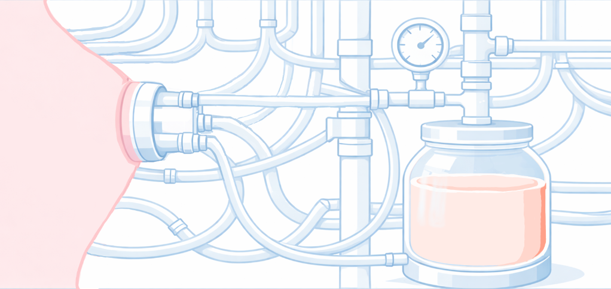
2026220 cm x 125 cm" data-desc="After childbirth, the body is connected to a system that measures, extracts, and demands. Milk becomes a quantified output, monitored and expected to meet an external standard. The pink fluid reflects not only nourishment, but the physical cost carried by the body itself. While care is directed toward what is produced, the experience of the producer is largely absent—Pressure replaces concern, and the body is treated as a source rather than a subject. 生产之后，女性的身体被接入一套测量、输送与要求产出的系统。 母乳被转化为可计算的结果，被持续监控，并被要求达到某种标准。 粉色的液体不仅象征喂养，也暗示母体所承受的消耗与代价。 当关注集中在“产出”本身，身体的感受与疼痛逐渐被忽视，母体被视为资源，而非主体。">
Title
Description